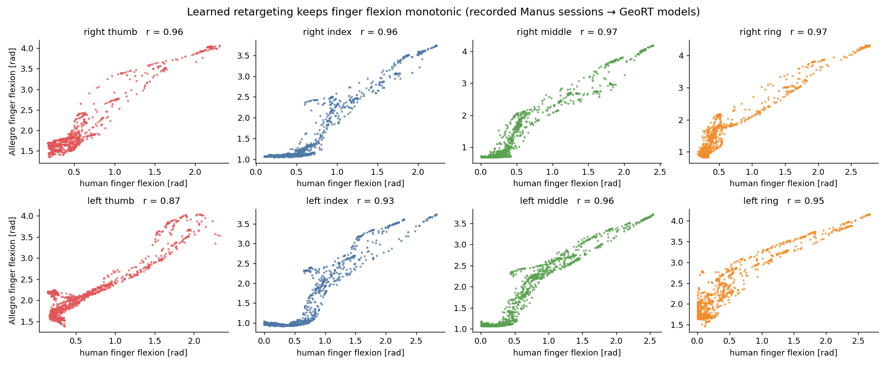

Two Manus gloves track the operator's fingers, a learned geometric retargeting network maps each hand's 21 keypoints to the 16 joints of an Allegro Hand V4, and a ROS 2 bridge streams both hands of a dual-arm robot in real time.
right_v1)left_v2)Recorded Manus glove sessions replayed through the trained models. The robot side shows the exact joint angles sent to the hands, rendered in SAPIEN.
JointState to both Allegro drivers, rate-limited and clamped to joint limits.Agreement between human finger flexion and Allegro finger flexion over the recorded sessions (Pearson r).
| finger | right hand (right_v1, 3,390 frames) | left hand (left_v2, 4,194 frames) |
|---|---|---|
| thumb | 0.96 | 0.87 |
| index | 0.96 | 0.93 |
| middle | 0.97 | 0.96 |
| ring | 0.97 | 0.95 |

The mapping is monotonic for every finger. Near full extension there is a dead band: the Allegro keeps about 1 rad of flexion because the model matches fingertip geometry, not joint angles. The left thumb, which needs the most mirroring corrections, is the weakest. These numbers measure consistency with the operator, not task success.
The repository also contains the earlier pipeline: glove → DexHand gesture model → a fixed DexHand-to-Allegro
joint-index table (dex2all). It copies joint angles one-to-one. GeoRT instead learns the mapping from
fingertip geometry, which accounts for the Allegro's longer fingers, its different thumb and its joint limits, and has
an explicit pinch term.
git clone https://github.com/ismael-esp/allegro-hand-retargeting.git && cd allegro-hand-retargeting
conda create -n geort python=3.11 -y && conda activate geort
pip install torch && pip install -r requirements.txt && pip install -e . # sapien==2.2.2, numpy<2
bash scripts/download_data.sh # recorded Manus sessions
python scripts/eval_flexion_correlation.py # reproduces the table
python geort/trainer.py -hand allegro_right -human_data manus_data_right -ckpt_tag my_right
bash scripts/run_dual_teleop.sh # gloves → both Allegro hands (robot drivers running)